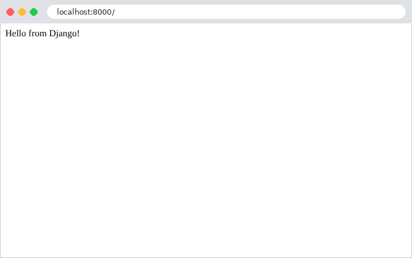
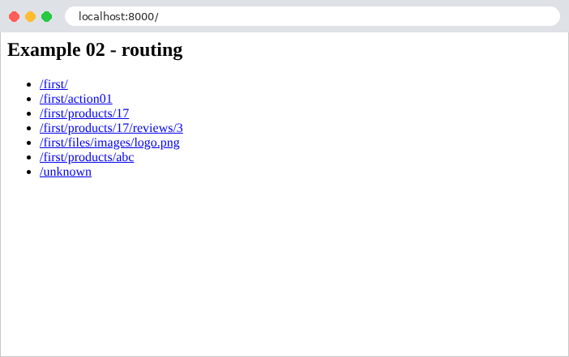

2. Views, roteamento, respostas
Este capítulo examina o caminho que uma requisição percorre, do navegador até a view que a processa, e a resposta que essa view devolve. Os templates só serão apresentados no Capítulo 3: aqui, as views devolvem texto ou JSON diretamente.
2.1. Exemplo 01: a estrutura de uma aplicação Django
O primeiro exemplo é a menor aplicação [Django] possível. Um projeto criado por [django-admin startproject] contém seis arquivos, e uma aplicação criada por [python manage.py startapp] contém mais sete (veja a introdução); aqui, mantemos apenas aqueles sem os quais a aplicação não funciona:
- [manage.py]: a ferramenta de linha de comando do projeto. Ela serve para iniciar o servidor de desenvolvimento e executar muitos outros comandos;
- [config]: um pacote [Python], isto é, uma pasta contendo módulos [Python] (arquivos [.py]) e um arquivo [__init__.py]. Para importar um módulo de um pacote, digite [config.settings] (o arquivo [config/settings.py]);
- [config/settings.py]: as configurações da aplicação;
- [config/urls.py]: as rotas da aplicação e, neste primeiro exemplo, sua única view;
- [config/wsgi.py]: o ponto de entrada da aplicação para um servidor web;
- [config/__init__.py]: o arquivo que faz da pasta [config] um pacote. Costuma ser vazio; o nosso contém apenas um comentário.
2.1.1. O ponto de entrada: config/wsgi.py
O [Python] tem um padrão para aplicações web: o WSGI (Web Server Gateway Interface, pronunciado “whiskey”). Ele define como um servidor web repassa uma requisição a uma aplicação [Python] e como recebe a resposta. Todos os servidores web [Python] ([gunicorn], [waitress], [uWSGI], o servidor de desenvolvimento do [Django]...) sabem chamar uma aplicação chamada WSGI, e todos os frameworks web [Python] ([Django], [Flask]...) geram uma. O arquivo [config/wsgi.py] gera a do nosso projeto:
- Linha 1: um comentário, de [#] até o fim da linha. Todos os arquivos dos exemplos começam com um comentário que indica seu nome e sua finalidade;
- linha 3: a instrução [import] importa um módulo: neste caso, [os], um módulo da biblioteca padrão do [Python], que dá acesso ao sistema operacional e, em particular, às variáveis de ambiente do processo ([os.environ]);
- Linha 5: [from ... import ...] importa o nome de um módulo: a função [get_wsgi_application] do módulo [django.core.wsgi]. O nome completo de um módulo indica sua localização: [django.core.wsgi] é o arquivo [wsgi.py] na pasta [core] do pacote [django], instalado no ambiente virtual (veja a introdução). Depois dessa importação, o arquivo pode se referir a ela simplesmente como [get_wsgi_application];
- linha 8: o [Django] obtém suas configurações pela variável de ambiente [DJANGO_SETTINGS_MODULE], que contém o nome do módulo de configuração: [config.settings]. [os.environ] se comporta como um dicionário; seu método [setdefault] atribui um valor a ela, a menos que já tenha um: uma variável de ambiente de verdade, definida antes da inicialização do servidor, tem precedência;
- Linha 11: [get_wsgi_application()] prepara o [Django]: lê as configurações, configura o log, carrega as aplicações do projeto (exemplo 02) e então devolve a aplicação WSGI, armazenada na variável [application]. É essa variável que o servidor web procura no arquivo. Em [Python], uma variável não é declarada: ela é criada na primeira atribuição e pode conter valores de qualquer tipo.
A aplicação WSGI é um objeto que o servidor chama — a cada requisição recebida — com os detalhes da requisição; o objeto devolve a resposta. A aplicação inteira é, portanto, uma função que transforma uma requisição em uma resposta. Nesse meio-tempo, o [Django] cria um objeto de requisição ([HttpRequest]), encontra a view responsável por tratá-la (roteamento), a chama e recupera o objeto de resposta ([HttpResponse]) que ela produz, transmitindo-o em seguida ao servidor.
Este arquivo é executado uma única vez, quando o servidor inicia. Essa é a diferença fundamental em relação ao [PHP], que os leitores do curso de [Symfony] viram em ação: no [PHP], a aplicação é reconstruída a cada requisição e depois descartada; no [Python], ela é construída uma vez, na inicialização, e depois permanece na memória para tratar todas as requisições seguintes. A configuração, a tabela de rotas, os módulos importados e os objetos armazenados em variáveis de módulo — tudo isso é construído uma vez e compartilhado por todas as requisições. Isso é rápido, mas exige cautela: os dados modificados por uma requisição ficam visíveis para as requisições seguintes e, se o servidor processa várias requisições ao mesmo tempo (o servidor de desenvolvimento faz isso, usando uma thread por requisição), duas requisições podem modificar os mesmos dados simultaneamente. Voltaremos a isso no Exemplo 06 e, especialmente, no capítulo sobre escopos de dados.
O [Python] tem um segundo padrão, mais recente: o ASGI (Asynchronous Server Gateway Interface), para aplicações assíncronas (como WebSockets, por exemplo). O [Django] pode gerar os dois; o arquivo [asgi.py] criado pelo [django-admin startproject] gera a aplicação ASGI. Ficaremos com o WSGI.
2.1.2. A configuração: config/settings.py
As configurações do [Django] são variáveis do módulo [config.settings], escritas em maiúsculas. É um arquivo [Python] comum: nele é possível calcular valores, ler variáveis de ambiente e importar outros módulos. O [Django] exige apenas algumas configurações; todas as outras têm um valor padrão, definido no módulo [django.conf.global_settings] do [Django] (mais de 150 configurações). O comando [python manage.py diffsettings] exibe as configurações que diferem de seus valores padrão:
- linha 3: [pathlib] é o módulo da biblioteca padrão que trata caminhos de arquivos. Um objeto [Path] representa um caminho; ele é escrito da mesma forma no [Windows] e nos demais sistemas;
- linha 6: a pasta do projeto. [__file__] é o caminho do arquivo atual ([config/settings.py]); [resolve()] o torna absoluto; [.parent] designa a pasta que o contém ([config]), e [.parent.parent] designa a pasta acima dela: a pasta [01-structure]. Essa configuração, [BASE_DIR], não é uma configuração do [Django]: é um recurso de conveniência que as outras configurações usarão para se referir às pastas do projeto ([BASE_DIR / "templates"], Exemplo 13: o operador [/] combina dois segmentos de caminho);
- Linha 10: modo de depuração. Se ele for definido como [True], uma exceção não tratada exibe uma página de erro detalhada (Exemplo 03), e o servidor de desenvolvimento serve ele mesmo os arquivos estáticos (Exemplo 15). Esse modo é destinado ao desenvolvimento, e somente a ele: a página de erro revela o código-fonte e a configuração da aplicação;
- Linha 13: a chave secreta da aplicação: uma sequência aleatória de caracteres que o [Django] usa para assinar certos dados (cookies assinados, tokens anti-CSRF, links de redefinição de senha etc.). Essa configuração é obrigatória: sem ela, o [Django] se recusa a iniciar. Cada exemplo tem a sua. O prefixo [django-insecure-] é o usado pelo [django-admin startproject]: serve de lembrete de que essa chave, escrita diretamente no código-fonte, não deve ser usada em produção, onde a chave é fornecida por uma variável de ambiente (estudo de caso);
- Linha 17: os nomes de host que a aplicação está configurada para atender (o cabeçalho [Host] da requisição). É uma proteção contra requisições que identificam falsamente o site de destino. No modo de depuração, uma lista vazia equivale a [localhost], [127.0.0.1] e [::1]; fora do modo de depuração, ela deve ser preenchida — caso contrário, o comando [python manage.py runserver] se recusará a iniciar. Em [Python], [[a, b]] é uma lista;
- Linhas 20–21: o idioma da aplicação ([en]: as datas, os números e as mensagens do [Django] estão em inglês; veja o Exemplo 06) e seu fuso horário. As strings podem ser delimitadas por aspas duplas ou simples; os exemplos usam aspas duplas;
- linha 24: o módulo que contém as rotas da aplicação: [config.urls], ou seja, o arquivo [config/urls.py];
- linha 27: a aplicação WSGI, indicada por seu caminho completo: a variável [application] do módulo [config.wsgi]. É essa que o servidor de desenvolvimento inicia.
2.1.3. Rotas e view: config/urls.py
- linhas 3–4: importação da classe [HttpResponse], a resposta HTTP, e da função [path], que declara uma rota;
- linhas 9–11: uma view — uma função que recebe a requisição e devolve a resposta. [def] define uma função; seu corpo é o bloco indentado que vem depois dos dois-pontos. Em [Python], a indentação não é apenas uma questão de formatação: é ela que delimita os blocos (enquanto o [PHP] e o [Java] usam chaves). O parâmetro [request] recebe a requisição, um objeto [HttpRequest] que o [Django] sempre passa primeiro a uma view (exemplo 05); é uma convenção do [Django] chamá-lo de [request];
- Linha 11: a view devolve um objeto [HttpResponse], cujo primeiro parâmetro é o corpo da resposta. Em [Python], um objeto é criado chamando-se sua classe como uma função, sem a palavra-chave [new]. Essa é a regra do [Django]: uma view sempre devolve um objeto [HttpResponse] (exemplo 03);
- linhas 15–17: a tabela de rotas. O [Django] procura no módulo [ROOT_URLCONF] uma variável chamada [urlpatterns]: uma lista de rotas. A rota [path("", home)] associa o caminho vazio (a raiz do site, [/]) à view [home]. Observe que o caminho de uma rota é escrito sem a barra inicial: o [Django] a remove do caminho solicitado antes de compará-lo com as rotas. Observe também que a própria função ([home], sem parênteses) é passada a [path], e não o seu resultado: em [Python], uma função é um objeto como qualquer outro, que pode ser armazenado em uma variável ou passado a outra função. O [Django] a chamará mais tarde, a cada requisição para [/]. Uma vírgula depois do último elemento da lista é permitida e é prática comum quando os elementos são escritos um por linha.
Em um projeto real, as views nunca são escritas no arquivo de rotas: elas ficam nos arquivos [views.py] da aplicação (Exemplo 02). Fizemos assim aqui para manter o exemplo simples.
2.1.4. A ferramenta manage.py
O arquivo [manage.py] é um script [Python] que prepara o [Django], assim como o [config/wsgi.py], mas para executar um comando em vez de processar requisições:
- Linha 1: no [Linux] e no [macOS], essa linha permite que o arquivo seja executado diretamente ([./manage.py]); no [Windows], digita-se sempre [python manage.py];
- linha 10: o módulo de configuração, como em [config/wsgi.py];
- Linhas 12–13: uma importação também pode ser feita dentro de uma função. [execute_from_command_line] executa o comando solicitado: [sys.argv] é a lista de parâmetros da linha de comando ([["manage.py", "runserver"]]);
- linhas 16–17: [__name__] é igual a ["__main__"] quando o arquivo é executado diretamente ([python manage.py]) e ao nome do módulo quando ele é importado. Essa condição, presente em muitos scripts [Python], chama a função [main] apenas no primeiro caso.
[python manage.py help] exibe a lista de comandos disponíveis: vinte e cinco neste exemplo, e mais quando recursos do [Django] são adicionados (arquivos estáticos, sessões, autenticação etc.). Usaremos vários deles: [runserver], [check] (verificação do projeto), [shell] (um console [Python] em que o [Django] já está pronto), [makemessages] e [compilemessages] (traduções, exemplo 22), [collectstatic] (arquivos estáticos, estudo de caso; a aplicação [django.contrib.staticfiles] adiciona esse comando). [django-admin] (veja os apêndices) é a mesma ferramenta, mas não sabe onde está a configuração do projeto.
2.1.5. Execução
Em uma janela de terminal aberta na pasta [01-structure], em que o ambiente virtual dos exemplos foi ativado (veja a introdução), digite [python manage.py runserver]. O [Django] exibe:
O comando [runserver] inicia o servidor de desenvolvimento integrado ao [Django]. Ele primeiro executa verificações do sistema no projeto: configurações ausentes ou inconsistentes, ou rotas escritas incorretamente, produzirão erros ou avisos aqui, antes de qualquer requisição. Depois ele escuta na porta 8000 da própria máquina ([127.0.0.1], [localhost]): aceita apenas requisições vindas dessa máquina, o que é adequado para o desenvolvimento ([python manage.py runserver 0.0.0.0:8000] o abriria para outras máquinas da rede). Ele é interrompido com [Ctrl-C]. Esse servidor é destinado ao desenvolvimento, como diz o seu aviso: em produção, será um servidor WSGI, como o [gunicorn] ou o [waitress] (veja o estudo de caso).
A primeira linha indica que o servidor monitora os arquivos do projeto ([StatReloader]: ele compara regularmente suas datas de modificação). Como a aplicação permanece na memória, a alteração de um arquivo [Python] não seria detectada pela aplicação em execução; por isso, o servidor de desenvolvimento reinicia automaticamente assim que um arquivo muda. Não é necessário reiniciá-lo manualmente, exceto após adicionar um arquivo novo que ainda não foi importado por ninguém.
Vamos acessar a URL e [http://localhost:8000/] com um navegador:

e depois com o [curl]. A opção [-i] também exibe os cabeçalhos HTTP da resposta:
A primeira linha da resposta contém a versão do protocolo, o código de status (200) e seu rótulo ([OK]). Em seguida vêm os cabeçalhos: a data, o servidor (o servidor WSGI da biblioteca padrão do [Python], sobre o qual o servidor de desenvolvimento é construído), o tipo de conteúdo e [Connection: close] (o servidor de desenvolvimento fecha a conexão após cada resposta). Uma linha em branco separa os cabeçalhos do corpo da resposta. No restante deste documento, não incluiremos mais os cabeçalhos [Date], [Server] e [Connection], pois eles não variam.
O cabeçalho [Content-Type: text/html; charset=utf-8] indica que a resposta é HTML, com caracteres codificados em UTF-8. Essa é a escolha do [Django] para uma resposta cuja view não especificou o tipo: o navegador interpreta, portanto, a string como HTML (aqui, sem nenhuma tag, ela é exibida como está). O Exemplo 03 mostrará como especificar um tipo diferente. A resposta é mínima: nenhum cabeçalho [Content-Length], nenhum cookie e nenhum cabeçalho de segurança. Esses itens são adicionados pelo middleware do [Django] (Exemplo 03), e a nossa aplicação não tem nenhum.
A cada requisição, o console do servidor exibe uma entrada de log: a data, os detalhes da requisição (método, caminho, protocolo), o código da resposta e o tamanho do corpo da resposta em bytes:
Vamos modificar o texto da linha 11 de [config/urls.py] e salvar o arquivo: o console exibe [.../01-structure/config/urls.py changed, reloading.], seguido das linhas de inicialização. A requisição seguinte recebe o novo texto.
2.2. Exemplo 02: roteamento
O roteamento associa uma URL a uma view. Escrever todas as views diretamente no arquivo de rotas logo se tornaria ilegível; em vez disso, elas são organizadas em aplicações. Uma aplicação [Django] é um pacote [Python] que reúne tudo o que se relaciona a um único domínio: suas views, suas rotas e, mais adiante, seus templates, formulários e models. Um projeto é um conjunto de aplicações. O Exemplo 02 tem duas:
Os arquivos [manage.py], [config/__init__.py], e [config/wsgi.py] são os do Exemplo 01: não voltaremos a mencioná-los. O arquivo [config/settings.py] sempre começa com as mesmas configurações (só mudam o nome do exemplo e a chave secreta); comentaremos apenas as configurações adicionadas por cada exemplo. Aqui está a lista de aplicações:
- linhas 17–20: a configuração [INSTALLED_APPS] lista as aplicações do projeto, identificadas pelos nomes de seus pacotes. O [Django] as carrega na inicialização, nessa ordem. Para o nosso exemplo, a declaração não é essencial: as views de [home] e [first] são encontradas por meio das importações feitas nos arquivos de rotas. Ela se tornará essencial assim que as aplicações incluírem templates (Exemplo 13), template tags (Exemplo 16), traduções (Exemplo 22) ou models do ORM (Exemplo 28) — que o [Django] procura somente nas aplicações declaradas. O [Django] fornece por si só várias aplicações ([django.contrib.sessions], [django.contrib.messages], [django.contrib.staticfiles], [django.contrib.admin]...), que são declaradas da mesma maneira.
2.2.1. A view da aplicação home
- linha 4: importação de um decorador do [Django];
- linhas 9–10: um decorador é uma função que envolve outra função para modificar seu comportamento. Ele é escrito como [@name] acima da definição da função: [@require_GET] acima de [def index] equivale a escrever [index = require_GET(index)] depois da definição. A função [index] é substituída por uma função que primeiro verifica o método HTTP da requisição: se não for GET, ela mesma responde com um erro 405, sem chamar [index]. Sem decorador, uma view aceita todos os métodos. O módulo [django.views.decorators.http] também contém [require_POST], [require_safe] (GET e HEAD) e [require_http_methods(["GET", "POST"])]. Observe que [require_GET] rejeita as requisições até mesmo com o método HEAD (a mesma requisição que GET, sem o corpo da resposta): [require_safe] é necessário para aceitá-lo. Por convenção, o nome de uma função ou variável em [Python] é escrito em minúsculas, com as palavras separadas por sublinhados ([require_GET] é uma exceção), enquanto o nome de uma classe tem uma letra maiúscula no início de cada palavra ([HttpResponse]);
- linhas 11–22: uma string de várias linhas, delimitada por três aspas (["""]). A view devolve HTML, enviado com o tipo [text/html] (veja o Exemplo 01).
A view [index] devolve, assim, uma página HTML que contém links para views da outra aplicação:

2.2.2. As views da aplicação first
- linhas 9–11: uma view como função, como no Exemplo 01;
- linhas 16–21: uma view também pode ser uma classe que herda da classe [View] do [Django]. Em [Python], a herança é escrita colocando-se a classe pai entre parênteses depois do nome da classe. A classe tem um método para cada método HTTP que implementa, com o nome do método HTTP em minúsculas: [get] para GET, [post] para POST. O [Django] chama o método que corresponde à requisição; um método HTTP que não seja tratado por nenhum método da classe resulta em um erro 405. Um método [Python] sempre recebe, como primeiro parâmetro, o objeto sobre o qual é chamado — por convenção chamado [self] — seguido da requisição. Essa é a forma mais clara de tratar vários métodos HTTP na mesma URL (uma função deveria testar [request.method] por conta própria; veja o Exemplo 11). O [Django] também oferece views genéricas — classes prontas para necessidades comuns ([TemplateView], [ListView], [FormView]...), que este documento não usa: elas escondem justamente o que queremos mostrar;
- linhas 26–28: uma view que recebe um parâmetro de rota, [id], depois da requisição. O valor já está convertido em inteiro (veja abaixo). A string [f"Product no. {id}"] é uma f-string: as expressões escritas entre chaves são substituídas por seus valores;
- linhas 32–34: dois parâmetros de rota. O [Django] os passa à view pelo nome (parâmetros nomeados): a ordem dos parâmetros da view não importa. Aqui, [number] é escrito antes de [id];
- linhas 38–40: um parâmetro de rota que contém barras.
2.2.3. As rotas: config/urls.py e first/urls.py
Ainda falta associar as URLs às views. A tabela de rotas principal, para a configuração [ROOT_URLCONF]:
- Linha 5: importa o módulo [views] da aplicação [home] com outro nome: [as home_views]. Duas aplicações podem ter, cada uma, um módulo chamado [views]; renomeá-lo evita confusão;
- Linha 9: a rota da raiz do site. O terceiro parâmetro, [name], dá um nome à rota: esse nome será usado para gerar sua URL (Exemplo 04) sem escrevê-la diretamente no código. O [Python] aceita parâmetros por posição ou por nome ([name="home"]): os parâmetros nomeados tornam a chamada mais legível;
- Linha 12: [include] delega uma parte das URLs a outra tabela de rotas: todas as URLs que começam com [first/] são atribuídas às rotas do módulo [first.urls], ao qual o [Django] passa apenas o final do caminho. Cada aplicação mantém assim suas rotas em seu próprio arquivo [urls.py], e o projeto apenas decide sob qual prefixo montá-las. O prefixo termina com uma barra: essa é a convenção usada pelo [Django], em que as rotas das aplicações nunca começam com uma barra.
- Linha 10: [app_name] fornece um namespace para as rotas do arquivo: para o restante do projeto, a rota chamada [product] se chama [first:product]. Duas aplicações podem assim ter, cada uma, uma rota chamada [index] sem conflito;
- linha 14: o caminho [""] designa o próprio prefixo: a URL e [/first/];
- linha 17: a view escrita como classe. [as_view()] é um método da classe [View] que cria a função que o [Django] chamará a cada requisição: essa função cria um objeto [Action01] e depois chama seu método [get] ou [post] , conforme o método HTTP da requisição. Um novo objeto é criado a cada requisição;
- Linha 20: [<int:id>] é um parâmetro de rota: esse segmento da URL pode assumir vários valores. [id] é o nome do parâmetro, que será passado à view; [int] é um conversor que aceita apenas dígitos e passa um inteiro à view: para a URL e [/first/products/17], o parâmetro [id] da view é o inteiro 17. Se o segmento não for formado por dígitos, a rota não corresponde. É o data binding, que o próximo capítulo examinará em detalhes;
- linha 22: dois parâmetros de rota;
- linha 25: o conversor [path] aceita qualquer final de caminho, inclusive barras. O [Django] tem cinco conversores: [str] (o conversor padrão: [<name>] é equivalente a [<str:name>]; qualquer texto não vazio sem barra), [int] (números), [slug] (letras, números, hifens e sublinhados, como em [my-article-01]), [uuid] (um identificador UUID) e [path]. O Exemplo 12 mostrará como escrever um conversor “personalizado”, e o Exemplo 22 mostrará a função [re_path], que descreve uma rota por meio de uma expressão regular.
A cada requisição, o [Django] percorre as rotas em ordem e para na primeira que corresponde ao caminho solicitado: a ordem das rotas importa quando duas rotas podem corresponder ao mesmo caminho.
2.2.4. Execução
Aqui estão as respostas a algumas requisições:
Para enviar uma requisição POST, use a opção [-X POST] do [curl]:
A requisição POST é aceita como está. Isso deixará de acontecer quando a aplicação tiver o middleware de proteção anti-CSRF do [Django] (Exemplo 18), que rejeita qualquer requisição POST que não comprove ter se originado de um formulário da aplicação. Um método HTTP que a view não trata resulta em um erro 405 ([Method Not Allowed]). O cabeçalho [Allow] especifica os métodos aceitos:
A resposta não tem corpo. A classe [View] aceita, além dos métodos da classe, o método HEAD (tratado pelo método [get]) e o método OPTIONS (que devolve a lista de métodos aceitos). O console do servidor registra a rejeição:
O decorador [@require_GET] produz o mesmo erro:
Uma URL que nenhuma rota trata resulta em um erro 404. O mesmo ocorre com um identificador que não é um número: o conversor [int] impede que a rota corresponda a [/first/products/abc].
Em um navegador, no modo de depuração:

A página de erro do [Django] explica que nenhuma rota corresponde ao caminho solicitado e lista, em ordem, todas as rotas da aplicação com seus nomes: é uma boa maneira de verificar suas rotas ([Django] não tem um comando que as liste). Observe que as rotas da aplicação [first] foram de fato prefixadas com [first/], e que o caminho foi comparado sem a barra inicial. O Capítulo 6 mostrará como substituir essa página por uma página personalizada da aplicação. Observe também que o [Django] distingue entre [/first/] e [/first]: a segunda, URL, não tem rota e retorna um erro 404. Um componente de middleware do [Django], o [CommonMiddleware] (estudo de caso), resolve esse problema: quando um caminho sem barra final não tem rota, mas o mesmo caminho com a barra final tem, ele redireciona o navegador (exemplo 04) para esse segundo caminho (essa é a configuração [APPEND_SLASH], ativada por padrão).
2.3. Exemplo 03: respostas de uma view
O que uma view retorna determina a resposta HTTP. O exemplo 03 examina os principais casos:
A aplicação roteia [responses], montada sob o prefixo [responses/] por meio do arquivo [config/urls.py], associa cada URL [/responses/xxx] a uma view:
Vamos comentar este código:
- linha 5: as classes de resposta e de exceção do módulo [django.http];
- linha 8: importação de uma classe de um módulo da mesma aplicação. O ponto em [.viewmodels] refere-se ao pacote do arquivo atual ([responses]): trata-se de uma importação relativa;
- Linhas 12–14: [HttpResponse] aceita parâmetros nomeados: [content_type] especifica aqui texto simples ([text/plain]); o navegador não interpretará as tags. [status] (o código de status, 200 por padrão) e [headers] (um dicionário de cabeçalhos) são os outros;
- linhas 18–20: a mesma string, sem tipo declarado: o [Django] a envia com o tipo [text/html], e o navegador a interpreta;
- linhas 26–28: [JsonResponse] é uma classe filha de [HttpResponse]: ela converte seu primeiro parâmetro em JSON e declara o tipo [application/json]. A conversão é feita pelo módulo [json] da biblioteca padrão, que reconhece apenas os tipos básicos do [Python]: dicionários, listas, strings, números, booleanos e [None]. Um objeto deve, portanto, ser primeiro convertido em dicionário: é o que a função [asdict] (linha 3) faz para uma data class, como [Person], mostrada abaixo. A view se chama [as_json]: se ela se chamasse [json], ocultaria o módulo [json] neste arquivo, caso ele fosse importado;
- linhas 32–34: um dicionário do [Python], delimitado por chaves, torna-se um objeto JSON;
- linhas 39–41: uma lista torna-se um array JSON. Por padrão, [JsonResponse] aceita apenas um dicionário: trata-se de uma antiga salvaguarda contra uma vulnerabilidade de navegadores antigos que permitia a um site de terceiros ler um array JSON. O parâmetro [safe=False] remove essa restrição;
- linhas 45–49: uma lista calculada. O método [sort] ordena a lista (ele modifica a própria lista). [[n * 10 for n in numbers]] é uma list comprehension: a lista dos valores [n * 10], para cada elemento [n] da lista [numbers];
- linhas 53–55: o parâmetro [status]: 201 ([Created]) substitui 200;
- linhas 59–61: o código 204 ([No Content]) significa “nada a exibir”: a resposta não tem corpo;
- linhas 65–67: um erro “esperado”: uma resposta 404 ([Not Found]), com um corpo (JSON) escolhido pela view;
- linhas 71–73: o mesmo erro, causado por uma exceção. [Http404] é uma exceção do [Django]; a instrução [raise] a lança, o que encerra a view. O [Django] a converte em uma resposta de erro 404. Essa é a maneira mais comum de encerrar uma view por causa de um erro, mesmo no fundo de uma função chamada pela view. O módulo [django.shortcuts] oferece dois atalhos que a lançam: [get_object_or_404] e [get_list_or_404] (para os modelos do ORM, Capítulo 7). [django.core.exceptions] define as exceções que geram os outros códigos de erro: [PermissionDenied] (403), [BadRequest] (400), [SuspiciousOperation] (400);
- linhas 77–79: um erro “inesperado” — uma exceção que ninguém trata — resulta em uma resposta 500 ([Internal Server Error]). [RuntimeError] é uma classe de exceção da biblioteca padrão do [Python], disponível sem importação;
- linhas 84–86: o erro a evitar. Uma view do [Django] deve retornar um objeto [HttpResponse]; esta view gera a resposta com sucesso, mas não a retorna. Uma função do [Python] sem [return] retorna o valor [None], que o [Django] rejeita (veremos a resposta abaixo). Isso difere de outros frameworks, como o [Flask], que convertem por conta própria um dicionário ou uma string em uma resposta: o [Django] exige que a view especifique explicitamente qual resposta ela retorna.
A classe [Person]:
- linha 3: o módulo [dataclasses] da biblioteca padrão;
- linhas 9–13: uma data class. As linhas [last_name: str] declaram atributos, junto com seus tipos (anotações de tipo, que o [Python] não impõe em tempo de execução, mas que o editor de código verifica). O decorador [@dataclass] usa esses atributos para gerar o construtor da classe (o método [__init__], chamado por [Person("Martin", "Jean", 42)]), seu método de comparação ([==]) e sua representação textual ([Person(last_name='Martin', first_name='Jean', age=42)]). Com [frozen=True], os atributos não podem mais ser modificados após a construção: um objeto [Person] é imutável. Não há obrigação de colocar essa classe em um módulo [viewmodels.py]: é uma escolha feita neste documento, que reserva o nome [models.py] para os modelos ORM do [Django] (Capítulo 7).
Resta o arquivo [config/middleware.py]:
Por padrão, uma resposta [JsonResponse] contém um JSON compacto, em uma única linha, no qual os caracteres não ASCII são escritos como sequências de escape: [é] torna-se [é], o que é um JSON válido, mas pouco legível. Para os exemplos deste curso, queremos um JSON legível. Em vez de solicitá-lo em cada view (o parâmetro [json_dumps_params] de [JsonResponse] permitiria isso), modificamos todas as respostas JSON da aplicação por meio de um mecanismo central do [Django]: o middleware.
Um middleware é um elo da cadeia que leva da requisição à view e, depois, da view à resposta. O [Django] encadeia os componentes de middleware da configuração [MIDDLEWARE] como bonecas russas: o primeiro recebe a requisição e a passa ao seguinte, que a passa ao próximo, e assim por diante até chegar à view; a resposta da view então percorre a cadeia de volta, em ordem inversa. Cada componente de middleware pode examinar ou modificar a requisição na ida e a resposta na volta, e pode até responder por conta própria sem chamar o componente seguinte. É assim que o próprio [Django] é construído: a sessão, a proteção anti-CSRF, as mensagens e o idioma são todos componentes de middleware.
- Linhas 11–13: um middleware é uma classe. O [Django] cria uma única instância dela quando a aplicação é iniciada, passando a função [get_response] — o restante da cadeia (os componentes de middleware seguintes, seguidos pela view) — ao seu construtor ([__init__]). O construtor a armazena em um atributo do objeto, [self.get_response];
- linhas 15–24: o método [__call__] torna o objeto chamável como uma função: o [Django] o chama a cada requisição, passando a requisição. O código que precede a chamada a [self.get_response(request)] é executado antes da view; o código que a segue é executado depois da view: aqui, o middleware não faz nada antes da view;
- linhas 19–23: se a resposta for uma resposta JSON (a função [isinstance] verifica a classe de um objeto), o middleware relê seu corpo ([response.content], bytes), decodifica-o ([json.loads]) e depois o codifica novamente ([json.dumps]) com duas opções: [ensure_ascii=False] (caracteres não ASCII escritos como estão) e [indent=4] (um formato indentado, em várias linhas). A atribuição a [response.content] substitui o corpo da resposta;
- linha 24: o middleware retorna a resposta, que continua sua propagação de volta.
O middleware ainda precisa ser declarado no arquivo [config/settings.py]:
- linhas 20–22: a configuração [MIDDLEWARE] lista os componentes de middleware da aplicação na ordem em que a requisição passa por eles, especificados pelo caminho completo de sua classe. Veremos essa lista se completar ao longo dos exemplos. Os exemplos 05 a 12 reutilizam esse middleware.
Em um navegador, a diferença entre [text/plain] e [text/html] é visível:


Veja as respostas das outras views:
O objeto foi convertido em um objeto JSON, com um campo por atributo. A view [/responses/dictionary] produz exatamente a mesma resposta.
A resposta da exceção é a página de erro do [Django], a mesma do Exemplo 02, com nossa mensagem no lugar da lista de rotas. Mesmo quando o cliente solicita uma resposta JSON por meio do cabeçalho [Accept: application/json] (opção [-H] do [curl]: [curl -i -H "Accept: application/json" http://localhost:8000/responses/abort]), a resposta continua sendo a página HTML: o [Django] não adapta suas respostas de erro ao tipo solicitado. Uma aplicação que queira erros em formato JSON os gera por conta própria usando um middleware (exemplo 08). O console informa o erro:
Resta a exceção não tratada. No modo de depuração, o navegador exibe a página de erro do [Django]: o tipo e a mensagem da exceção, a view atual, o arquivo e a linha em que ela foi lançada, seguidos da pilha de chamadas (traceback), e a lista das funções que estavam em execução no momento do erro, da mais antiga à mais recente:

Mais abaixo na página, a última função da pilha é a nossa view, [error], na linha 79 do arquivo [responses/views.py]; acima dela estão as funções do [Django] que a chamaram. Para cada função, o link “Local vars” exibe os valores de suas variáveis locais; o restante da página exibe a requisição (seus parâmetros, cookies e cabeçalhos) e todas as configurações da aplicação (aquelas cujos nomes sugerem informações sensíveis, como [SECRET_KEY], são mascaradas com asteriscos). Por todos esses motivos, o modo de depuração nunca deve ser ativado em um servidor acessível a outras pessoas. O erro também é gravado no log da aplicação — neste caso, o console do servidor — junto com a pilha de chamadas:
Sem o modo de depuração ([DEBUG = False] no arquivo [config/settings.py], junto com [ALLOWED_HOSTS = ["localhost"]], já que a lista não pode mais ficar vazia), a mesma consulta produz uma página de erro breve que não revela nada sobre o código:
e o erro 404 de [/responses/abort] também se torna uma página curta ([Not Found]: “The requested resource was not found on this server.”), sem a nossa mensagem. Fora do modo de depuração, o [Django] também não grava mais a pilha de chamadas no console: ele a envia por e-mail aos administradores do site, se eles estiverem especificados (configuração [ADMINS]). O estudo de caso mostrará como configurar o log. O Capítulo 6 mostrará como exibir uma página de erro específica da aplicação.
Por fim, a view que esquece de retornar sua resposta:
O console exibe a mensagem da exceção:
A mensagem é clara: “The view did not return an object HttpResponse; it returned None.” Esse é um erro comum entre iniciantes: em uma view com várias ramificações ([if] / [else]), uma delas esquece o seu [return].
2.4. Exemplo 04: redirecionamentos
Um redirecionamento é uma resposta que instrui o navegador a buscar outra URL: um código 3xx, junto com o cabeçalho [Location], que contém o novo endereço. O navegador envia imediatamente uma segunda requisição a esse endereço. As rotas do exemplo:
O arquivo [config/urls.py] monta as rotas da aplicação [redirects] na raiz do site (prefixo vazio). O arquivo [redirects/urls.py] não contém uma linha para [app_name]: suas rotas não têm namespace e se chamam simplesmente [page], [new]... As views:
- Linha 4: o módulo [django.shortcuts] contém atalhos e funções que condensam as operações mais comuns em uma única linha: [redirect], [render] (o capítulo sobre templates), [get_object_or_404]...;
- Linhas 9–11: [redirect] gera uma resposta de redirecionamento (um objeto [HttpResponsePermanentRedirect] ou [HttpResponseRedirect] , duas subclasses de [HttpResponse]) para o endereço especificado. Com [permanent=True], o código é 301 ([Moved Permanently]): a página mudou de endereço em caráter permanente, e o navegador (e os mecanismos de busca) podem memorizar o novo;
- Linhas 21–23: sem [permanent=True], [redirect] produz um redirecionamento temporário com o código de status 302 ([Found]). O endereço é calculado concatenando pedaços de texto (o operador [+] concatena duas strings), o que gera um problema, como veremos;
- linhas 28–30: [redirect] também aceita o nome de uma rota (['page']), seguido de seus parâmetros ([name=destination]): ele então gera o endereço por conta própria usando a função [reverse] do [Django], que realiza o processo de roteamento reverso (de um nome de rota e seus parâmetros para uma URL) e codifica corretamente os parâmetros para uma URL. Se o caminho da rota [page] for alterado algum dia, os redirecionamentos para ela serão atualizados automaticamente. Para uma rota em uma aplicação que tem namespace, o nome é escrito como [first:product] (exemplo 02);
- linhas 40–41: um redirecionamento para outro site: o endereço é usado como está. [redirect] primeiro verifica se a string é um nome de rota; se nenhum for encontrado, uma string que contém uma barra ou um ponto é tratada como um endereço (caso contrário, é um erro).
As respostas, usando [curl] (que, sem opções, não segue redirecionamentos):
O cabeçalho [Location] contém o endereço conforme fornecido pela view, relativo ao site: o navegador o complementa com o protocolo, o host e a porta da página atual. A resposta não tem corpo. A opção [-L] do [curl] segue o redirecionamento, exatamente como um navegador faria:
Agora vamos comparar os dois redirecionamentos calculados, com um destino que contém um ponto de interrogação, codificado como [%3F] na URL (um [?] não codificado iniciaria os parâmetros da URL):
O [Django] decodificou o parâmetro da rota antes de passá-lo à view: [destination] é igual a [a?b]. A primeira view o insere de volta na URL como está: [/page/a?b], que o navegador interpreta como o caminho [/page/a] seguido do parâmetro [b]. A segunda segue a rota nomeada, cujo parâmetro é recodificado como: [/page/a%3Fb]. Seguindo os redirecionamentos:
Somente o segundo leva à página correta. Daí a regra: um endereço que contém um valor variável é construído a partir do nome de sua rota ([redirect("page", name=...)], [reverse("page", kwargs={"name": ...})] e, nos templates, a tag [{% url %}]), nunca por concatenação de strings. No navegador, você só vê a página final; a barra de endereços exibe a nova URL:

Existem outros dois códigos de redirecionamento: 303 ([See Other]) e 307 ([Temporary Redirect]), que são obtidos gerando você mesmo a resposta: [HttpResponseRedirect(url, status=303)]. Após uma requisição POST, os códigos 302 e 303 fazem o navegador enviar uma requisição GET ao novo endereço, enquanto o 307 (e o 308, a versão permanente) o fazem repetir a requisição POST. O Exemplo 20 usará um redirecionamento após um POST.
2.5. Exemplo 05: os objetos de requisição e de resposta
Até aqui, as views só usaram parâmetros de rota e retornaram uma resposta de uma linha. Uma view também pode acessar a requisição atual e montar sua resposta pouco a pouco. A aplicação se chama [http_app] (e não [http], como no curso de [Symfony]: [http] já é o nome de um pacote da biblioteca padrão do [Python], que o nosso sobrescreveria); suas rotas são montadas sob o prefixo [http/]:
- linhas 11–20: o parâmetro [request] da view, que ainda não tínhamos usado, é o objeto [HttpRequest] da requisição atual. Seus atributos e métodos fornecem todas as informações que ela contém: seu método HTTP ([method]), seu caminho ([path]), sua URL completa ([build_absolute_uri()], que acrescenta o protocolo, a máquina e a porta) e seus cabeçalhos ([headers], um dicionário cujas chaves não diferenciam maiúsculas de minúsculas: [headers.get("user-agent")] produziria o mesmo resultado). O atributo [META] é um dicionário que contém todas as variáveis transmitidas pelo servidor WSGI: os cabeçalhos (sob nomes como [HTTP_USER_AGENT]), os parâmetros brutos (a parte da URL que segue o [?], [QUERY_STRING]), o endereço IP do cliente ([REMOTE_ADDR])... O método [get] de um dicionário retorna o valor de uma chave, ou [None] se a chave não existir, enquanto [d["key"]] lançaria uma exceção [KeyError]. Os parâmetros, um a um, serão abordados no próximo capítulo;
- Linhas 24–28: a resposta é primeiro criada e depois preenchida: um objeto [HttpResponse] é manipulado como um dicionário de cabeçalhos. [response["X-Example"] = ...] adiciona o cabeçalho [X-Example] (por convenção, os cabeçalhos específicos de uma aplicação costumam começar com [X-]); [response.headers] também dá acesso a esses cabeçalhos;
- linhas 32–35: a resposta construída de uma só vez: o corpo, o código de status e os cabeçalhos. Uma chamada de função pode ocupar várias linhas; entre parênteses, o [Python] ignora as quebras de linha;
- linhas 40–49: uma resposta enviada em partes (streaming). Um objeto [StreamingHttpResponse]recebe, em vez de uma string, um iterador: um objeto que produz partes, uma após a outra. Aqui, é o resultado de uma função geradora: uma função que contém a instrução [yield]. Chamar [chunks()] não executa a função: retorna um gerador, que executará a função passo a passo, de um [yield] ao seguinte, cada vez que uma parte for solicitada. A função é definida dentro da view: isso é permitido em [Python]. O servidor envia o código e os cabeçalhos e, em seguida, cada parte assim que ela é gerada. O tamanho da resposta não é conhecido de antemão. Isso é útil para uma resposta muito longa, gerada aos poucos (um arquivo CSV grande, por exemplo). Mas, depois que a primeira parte é enviada, o código de status não pode mais mudar: aqui, a função lança uma exceção após a primeira parte. Esse é o erro a evitar: uma resposta que já começou não pode se tornar uma resposta de erro.
O middleware [ReadableJson] é o do Exemplo 03. As respostas:
As aspas em torno da URL impedem que o terminal interprete o caractere [&]. Em um navegador, o cabeçalho [User-Agent] é o do navegador.
Após um segundo, o [curl] para: o servidor fechou a conexão. O cliente recebeu um código de status 200 e um corpo simplesmente truncado, sem nenhuma maneira de saber que ocorreu um erro. O [Django] não pôde fazer nada: quando a exceção é lançada, sua view já terminou o trabalho há muito tempo (ela retornou a resposta e seu gerador), e é o servidor — ao solicitar a parte seguinte — que recebe a exceção. Somente o console do servidor a indica, com uma pilha de chamadas que começa no servidor WSGI do [Python], e não no [Django]:
2.6. Exemplo 06: serviços compartilhados
Uma view não deve conter a lógica da aplicação; ela delega essa lógica a serviços — objetos que realizam tarefas específicas (como ler os dados de produtos ou calcular o total de um carrinho de compras). Várias views costumam usar o mesmo serviço. O [Symfony], assim como o [Spring] ou o [ASP.NET Core], tem um contêiner de serviços para essa finalidade, que cria os serviços e os fornece automaticamente a quem precisa deles: isso é a injeção de dependência. O [Django] não tem nada parecido. No [Python], um módulo é executado apenas uma vez, em sua primeira importação, e todos que o importam depois recebem o mesmo módulo: um objeto armazenado em uma variável de módulo já é, portanto, compartilhado por toda a aplicação. Os módulos funcionam como contêineres. O passo seguinte é organizar as coisas para que as views dependam de um contrato, e não de uma implementação. O Exemplo 06 organiza seu código por domínio (produtos, clientes) — ou seja, no [Django], por aplicação:
2.6.1. O produto: products/viewmodels.py
- Linha 7: uma data class imutável (veja o Exemplo 03). Um objeto imutável pode ser compartilhado com segurança entre várias partes do código e entre várias requisições;
- Linhas 9–12: os atributos, junto com seus tipos. O preço é um inteiro: o preço em centavos (150 para € 1,50). Um número de ponto flutuante, do tipo [float], é representado em binário e não consegue representar exatamente 0.1 ou 3.2 (em binário, esses números têm infinitos dígitos): uma soma de preços em [float] pode resultar em 5.500000000000001. Uma soma de inteiros, porém, é sempre exata. O [Python] também oferece o tipo [Decimal] (módulo [decimal]), que realiza cálculos exatos na base 10: é o que o ORM do [Django] usa para as colunas decimais de um banco de dados.
2.6.2. O contrato do serviço e sua implementação: products/services.py
- Linhas 3, 10: o contrato do serviço: o que ele pode fazer, sem especificar como. [Java] ou [C#] o definiriam por meio de uma interface; o [Python] o define por meio de uma classe abstrata que herda da classe [ABC] (Abstract Base Class) do módulo [abc]. Não é possível criar um objeto a partir de uma classe abstrata;
- Linhas 11–18: os métodos do contrato, marcados com [@abstractmethod]: uma classe filha deve implementar todos eles; caso contrário, também não será possível criar um objeto dessa classe filha. Seu corpo, [...] (o objeto [Ellipsis]), não faz nada: está ali porque uma função do [Python] deve ter um corpo. As anotações de tipo descrevem o contrato: [find_all] retorna uma lista de produtos ([list[Product]]); [find_by_id] recebe um inteiro e retorna um produto, ou [None] se ele não existir ([Product | None]);
- linha 22: a implementação herda o contrato;
- linhas 23–30: o construtor. [self._products] é um atributo do objeto; o sublinhado inicial é uma convenção do [Python] para indicar “privado”: nada impede que outro módulo o utilize, mas ele sabe que não deveria. A linha 25 exibe uma mensagem no console para que possamos ver quando o serviço é criado;
- linhas 32–34: o método retorna uma cópia da lista de produtos ([list(...)] cria uma nova lista): quem chama pode modificá-la sem afetar os dados do serviço (os próprios objetos [Product] não são copiados, mas são imutáveis);
- linhas 36–38: [(p for p in self._products if p.id == id)] é uma expressão geradora, semelhante à list comprehension do Exemplo 03: ela produz, um a um, os produtos cujo identificador é [id]. A função [next] retorna o primeiro elemento gerado, ou o valor de seu segundo parâmetro ([None]) se não houver nenhum.
2.6.3. O provedor do serviço: products/provider.py
As views não criam o serviço por conta própria: elas o solicitam a uma função — o provedor — que decide qual implementação criar e garante que apenas uma seja criada:
- Linha 5: [django.conf.settings] dá acesso às configurações da aplicação, que são as do arquivo [config/settings.py] complementadas pelos valores padrão: [settings.DEBUG], [settings.LANGUAGE_CODE]... É assim que cada módulo da aplicação lê sua configuração;
- linha 6: [import_string] importa um objeto especificado por seu caminho completo, em forma de string: é assim que o [Django] encontra o middleware da configuração [MIDDLEWARE];
- Linhas 14–18: a função provedora. Ela lê o nome da classe selecionada na configuração [PRODUCTS_SERVICE], carrega-a, cria um objeto dessa classe ([cls()]) e o retorna. O decorador [@cache], do módulo [functools] da biblioteca padrão, armazena em cache o resultado da primeira chamada: as chamadas seguintes retornam o mesmo objeto sem executar a função. O serviço é, portanto, criado apenas uma vez, na primeira chamada, e depois é compartilhado por todas as views e todas as requisições enquanto o servidor estiver em execução. Isso é o que em outros lugares se chama de singleton. Ele também é tardio (lazy): enquanto nenhuma view o solicitar, ele não é criado. A anotação
***[-> ProductsService]*** especifica o tipo de retorno: o contrato, não a implementação.
Resta escolher a implementação, no arquivo [config/settings.py]:
- linha 25: uma configuração específica da aplicação. O [Django] aceita, no arquivo de configurações, qualquer variável escrita em maiúsculas e a disponibiliza por meio de [django.conf.settings]. É aqui, e somente aqui, que a implementação do serviço é escolhida. Para passar a uma implementação que leia de um banco de dados, bastaria alterar essa linha: as views, que conhecem apenas o contrato, permaneceriam inalteradas. Esse é o benefício da injeção de dependência, obtido aqui sem um contêiner: cada parte da aplicação depende de contratos, e um único local determina as implementações. O pacote [products] também se chama [products] na configuração [INSTALLED_APPS] (linha 15): o [Django] o importa na inicialização.
2.6.4. Views de produtos e de clientes
- Linha 8: a view importa o provedor, e não a classe [InMemoryProductsService]; ela não sabe que os produtos estão na memória;
- Linhas 12–16: a view delega o trabalho ao serviço. A lista de produtos é convertida em uma lista de dicionários, que se torna um array JSON (Exemplo 03);
- Linhas 20–24: um produto desconhecido retorna uma resposta 404, com uma mensagem em JSON. O conversor [<int:id>] na rota (arquivo [products/urls.py]) garante que [id] seja um inteiro.
- linhas 7, 12: esta segunda aplicação usa o mesmo serviço da aplicação de produtos, importando-o do pacote [products]. O provedor retorna a ela o mesmo objeto;
- linha 14: [sum] soma os elementos produzidos pela expressão geradora;
- linhas 15–18: [len] retorna o número de elementos de uma lista. O total é retornado em centavos e formatado em euros: [number_format], do módulo [django.utils.formats], escreve um número com duas casas decimais segundo as convenções do idioma da aplicação: um ponto como separador decimal para o inglês. A divisão [total / 100] produz um [float], mas apenas para fins de exibição: os cálculos propriamente ditos foram feitos com inteiros. O Exemplo 16 mostrará uma maneira bem melhor de formatar valores.
Por fim, uma palavra sobre o tempo de vida desse serviço compartilhado. Como vimos no Exemplo 01: no [Python], a aplicação permanece na memória de uma requisição para a seguinte. O serviço é, portanto, único para toda a aplicação: a próxima requisição receberá o mesmo objeto que a anterior, e qualquer dado modificado por uma requisição será visível para todas as seguintes. Para um serviço que apenas lê dados estáticos, como este, isso é ideal: ele é criado uma única vez. Para um serviço cujos dados mudam (a lista de tarefas do Exemplo 20), isso é conveniente (os dados sobrevivem entre as requisições, sem arquivo nem banco de dados), mas é preciso tomar duas precauções: duas requisições simultâneas podem modificar os dados ao mesmo tempo, por isso devem ser protegidas por um lock; e os dados desaparecem quando o servidor é desligado (ou reiniciado, após uma alteração de código). É exatamente o oposto do [PHP], em que cada requisição tem seus próprios serviços, recriados a cada vez.
2.6.5. Execução
O console do servidor exibe a mensagem do construtor na primeira requisição que chama o serviço, e somente nessa requisição:
O console do servidor:
O serviço foi criado apenas uma vez, para as três requisições e para as duas aplicações. Se um arquivo do projeto for modificado, o servidor reinicia, e a mensagem reaparece na requisição seguinte.